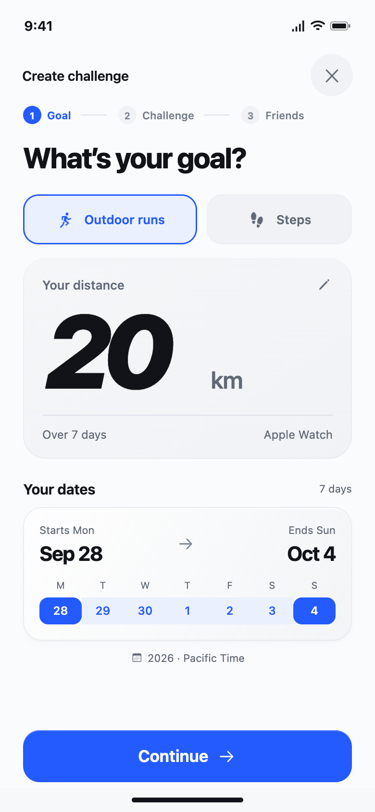
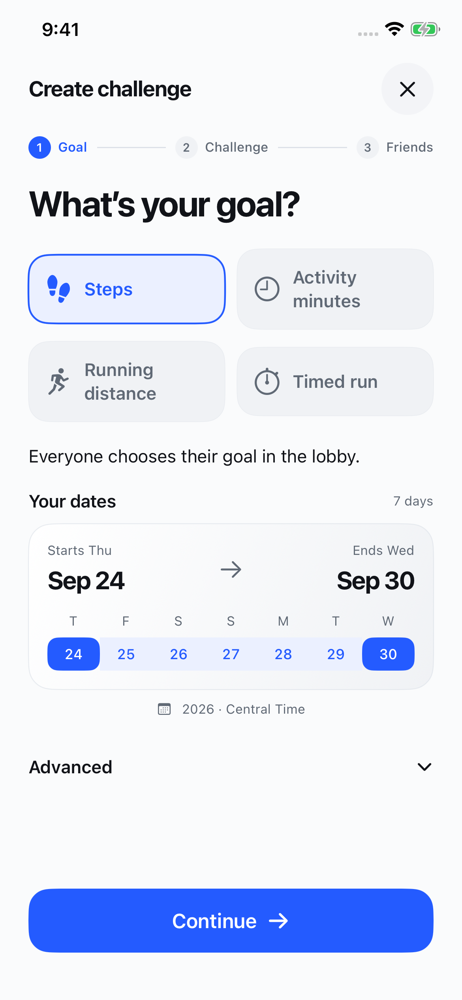
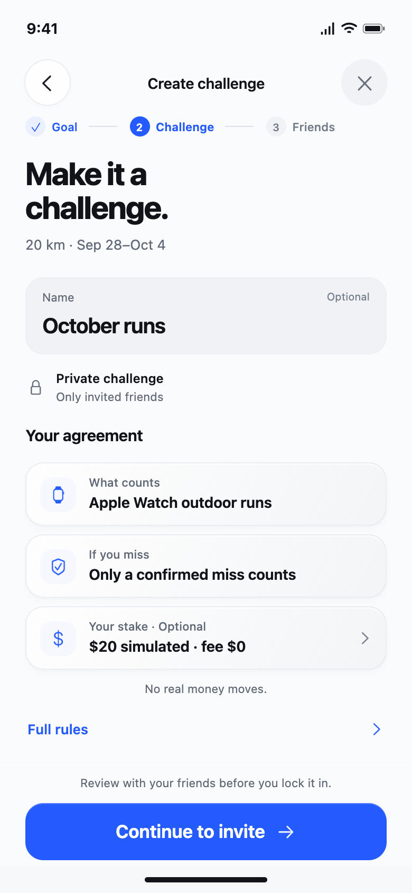
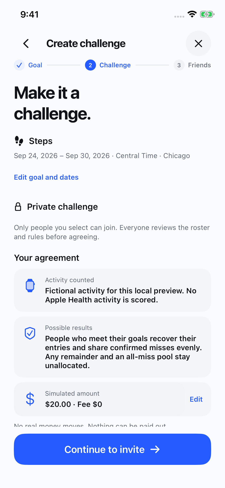
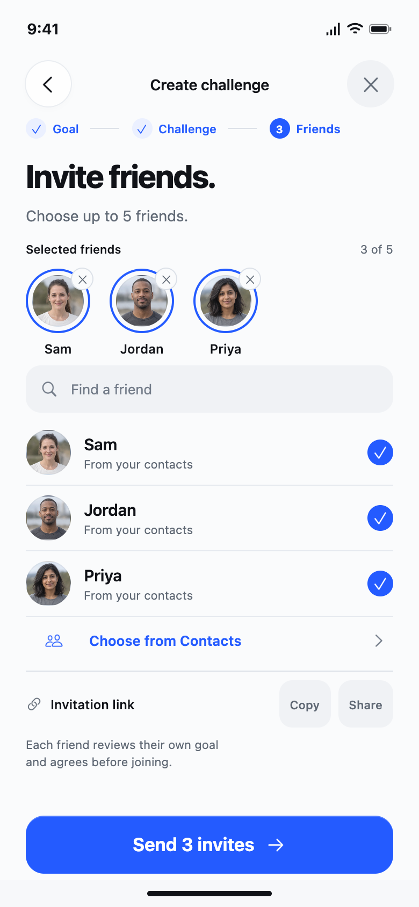
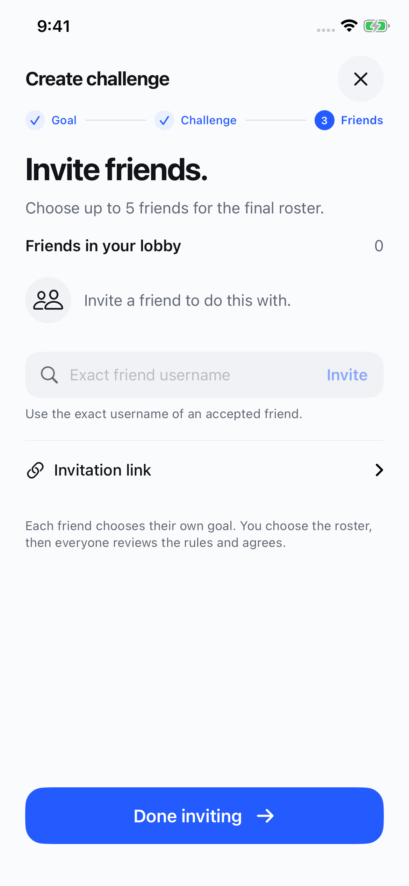

Create, in the app.
Three-step creation flow, compared with the approved references. Native screenshots show the real form and lobby states; differences are called out below each pair.


Current product difference. Native creation offers four supported activities. In a friend challenge, each person chooses their own goal in the lobby. The initial screen collects activity and dates, with the actual time zone.


The agreement stays exact. Native cards use the selected policy’s real activity and outcome rules. Those values can be longer than the mock’s short examples, and the full review scrolls. This local capture identifies fictional activity. Challenge names are derived from supported data rather than an unsaved optional name.


Different data states. The native fixture has an empty lobby; the mock has three selected friends. Native invitations use an accepted friend’s exact username or the invitation link. The screenshot does not establish a contacts picker, selected-photo parity or completed friend consent.
Three clear steps
Goal → Challenge → Friends, with a numbered current step and completed checkmarks.
Labels stay on one line
Each step keeps enough width for its name. “Challenge” no longer breaks across lines.
Advanced stays secondary
Personal and private leaderboard choices sit under Advanced. The initial path leads with activity and dates.
Images retain their original proportions; open either image for the full capture. Home, Goal / Rules, Challenges, You and the locked palette are unchanged by this creation fix.